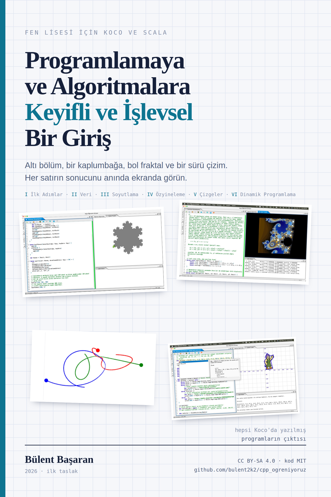

Bu kitapçık, Keyifli Bir Başlangıç'ın kardeşi: aynı kavramlar, bambaşka bir ortam. Bu sefer derleyici beklemek yok — yazdığınız her satırın sonucunu anında, ekranda, çizim olarak göreceksiniz. Ve yol boyunca programlamanın en zarif üslubuyla tanışacaksınız: işlevsel üslupla.

Derslerimizde C++ öğrenirken ara sıra başka bir pencere açıp size bir şeyler gösterdim: kendini çizen kar taneleri, sonsuz derinlikte desenler, birbirinin çevresinde dans eden gök cisimleri. O pencerenin adı Koco — ve bu kitapçık, o pencereyi sonuna kadar açıyor.
Koco, Scala diliyle çalışan, tamamı Türkçeleştirilmiş bir öğrenme ortamı. Komutları Türkçe, türleri Türkçe, yardım sayfaları Türkçe — ve yamalı Scala derleyicisi sayesinde dilin anahtar sözcükleri bile Türkçe. Bunu başka hiçbir dilin Kojo'su yapmıyor. Birkaç iş arkadaşımla yıllardır gönüllü olarak emek verdiğimiz açık kaynak bir proje; kısacası biraz da bizim çocuk. Ama onu bu kitapçığa taşıyan şey duygusallık değil, iki somut üstünlük:
“İşlevsel” sözcüğü şimdilik havada kalabilir; öyle kalsın. Bu kitapçığın işi onu adım adım elle tutulur yapmak. Altı bölümün sonunda dönüp bu sayfaya baktığınızda, iki anlamını da görmüş olacaksınız: hem işlevlerle örülü, hem de gerçekten işe yarar.
Bu kitapçığın bir kardeşi var: Programlamaya ve Algoritmalara Keyifli Bir Başlangıç — aynı konuları C++ ile anlatıyor. Bölümleri bilerek paralel kurdum: orada sayı tahmin oyunu varsa burada da var; orada özyineleme Hanoi kuleleriyle geliyorsa burada Koch tanesiyle geliyor; oradaki çizge gezisi burada işlevsel kılıkta karşınıza çıkıyor.
Hangisinden başlamalı? Fark etmez; ikisi de kendi başına okunuyor. Ama asıl güzeli ikisini yan yana okumak. Aynı algoritmayı iki dilde görmek, tek dilde iki kere görmekten çok daha öğretici — tıpkı iki farklı çözümü karşılaştırmanın tek çözümü ezberlemekten öğretici olması gibi.
Bir bölümü burada bitirince kardeş kitapçıktaki eşine göz atın ve kendinize şu soruyu sorun: hangi kısım orada daha kolaydı, hangisi burada? Bu sorunun yanıtı size dillerin karakterini, dillerin karakteri de programlamanın kendisini öğretir.
Tezgâh bu sefer çok kısa; Koco tek parça bir uygulama.
ileri(100). Tuvalde yukarı doğru bir çizgi belirecek.
Çizen şey bir kaplumbağa — birazdan tanışacaksınız.
Bir de yol arkadaşı kaynaklar: Koco'nun kavramlarını anlatan
Türkçe temel
bilgiler dizisi ve ders depomuzdaki
Koco'ya
davet yazısı. Takıldığınız her komut için Koco'nun içinde de yardım var:
komutun üstüne gelip bekleyin ya da Ctrl+Boşluk ile kod
tamamlamayı açın.
Kardeş kitapçıktaki altı ilkenin hepsi burada da geçerli; özellikle üçünü hatırlatıp geçiyorum:
Haftada bir sabit saat belirleyin ve koruyun. Bu kitapçık altı bölüm; her bölüm bir-iki haftalık keyifli bir iş. Bir dönemde, kardeş kitapçıkla birlikte ikisini de bitirmiş olursunuz.
| Bölüm | Konu | Sonunda yapabileceğiniz |
|---|---|---|
| I. İlk Adımlar | Kaplumbağa komutları; değer, tür, işlev; yineleme | Kendi desenlerinizi çizen programlar ve bir sayı tahmin oyunu |
| II. Veriyi Düzenlemek | Dizin, küme, eşlem; işle, ele, indirge; Belki | Döngü yazmadan veri işleyen, tek satırlık çözümler |
| III. Soyutlama | İşlevi girdi alan işlevler, değişmez değerler, sınama, ölçme | Kendi yinele'nizi yazmak; kendini sınayan program |
| IV. Özyineleme | Taban ve adım; ağaçlar, Koch tanesi, Hanoi; bellekle hızlandırma | Özyinelemeyi yazmak değil, görmek: kendi fraktallarınız |
| V. Çizgeler | Çizge temsili; derinlemesine ve enlemesine gezi, işlevsel kılıkta | Değişmez kümelerle çizge gezen, kanıtı kolay kod |
| VI. Dinamik Programlama | Bellek, ızgara yolları, bozuk paralar; Mandelbrot | Tümevarım formülünü doğrudan koda çevirmek — ve yola devam |
Bu kitapçıktaki alıştırmaların çözümleri yok. İpucu var, yanıt yok. Yanıt sizde — ya da yan masadaki arkadaşınızda. Bir de: buradaki bütün kodlar Koco'da çalışacak biçimde yazıldı; birebir yazıp çalıştırın, sonra bozup düzeltin. Kod bozmak serbest, hatta ödev.
Koco'nun Türkçesi yüzeyde kalmıyor: dilin çekirdek sözcükleri bile
Türkçe. Bu kitapçıkta en çok şunları göreceksiniz:
tanım (def), dez (val
— değişmez değer), den (var —
değişken), eğer/yoksa (if/else),
eşle/durum (match/case),
tür (type), durum sınıf
(case class), doğru/yanlış
(true/false). Parantez içindeki İngilizce özgün adlar da
Koco'da aynen çalışır; Scala kitaplarına geçtiğinizde tanış
çıkarsınız.
Programlamaya ve Algoritmalara Keyifli ve İşlevsel Bir Giriş
Bülent Başaran · 2026 · İlk taslak
Bu kitapçığın metni Creative Commons Atıf-AynıLisanslaPaylaş 4.0 (CC BY-SA 4.0) lisansıyla sunuluyor; içindeki örnek programlar MIT lisansı altında. Kopyalayın, çalıştırın, bozun, düzeltin, paylaşın.
Kojo, Lalit Pant'ın kurduğu ve dünyanın dört bir yanından gönüllülerin katkı verdiği açık kaynak bir projedir; Türkçe sürümü Koco'ya bu satırların yazarı da katkıda bulunuyor. Kitapçıkta anılan dış kaynaklar kendi sahiplerine ve koşullarına tabidir.
Bu kitapçıktaki bütün programlar, Koco'nun Türkçe anahtar sözcüklü
Scala derleyicisiyle (scala-tr, 2.13.18) derlendi; konsol
örnekleri çalıştırıldı ve gösterilen çıktılar gerçek çıktılardır.
Çizim örneklerinin görüntüsünü ise kendi Koco'nuzda alacaksınız —
zaten bütün mesele o.
Bir hata bulursanız ya da bir bölümün daha iyi anlatılabileceğini
düşünüyorsanız,
ders deposunda
konu açın. Kitapçık da ders gibi, birlikte gelişiyor.